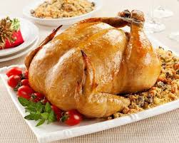

A Ceia de Natal é um dos momentos mais emblemáticos e esperados das celebrações de fim de ano, carregando um profundo simbolismo de confraternização, união e renovação. Originalmente ligada à celebração religiosa da véspera do nascimento de Jesus, onde se rompia o jejum com uma refeição à meia-noite, a ceia evoluiu para um banquete farto que reúne familiares e amigos ao redor da mesa. No Brasil, essa tradição é marcada por pratos típicos que misturam influências globais, como o peru ou o chester, o arroz à grega ou com passas, a farofa e as rabanadas, transformando a noite de 24 de dezembro em um instante de gratidão, partilha de afetos e reflexão sobre o ano que se encerra.
principais receitas

peru ou frango assado: o peru e frequentamente o protagonista da ceia de natal, muitas vezes recheado e temperado com